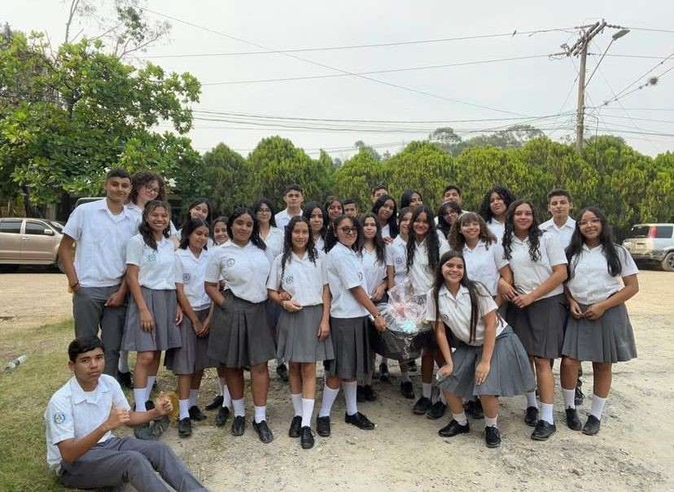

El Bachillerato en Ciencias y Humanidades del Instituto Departamental de Oriente ofrece una formación integral enfocada en el desarrollo de competencias científicas, humanísticas y sociales para preparar a los estudiantes para estudios superiores y la vida ciudadana.

Objetivos de la Carrera
Fomentar el pensamiento crítico y analítico en ciencias y humanidades.
Desarrollar habilidades de comunicación oral y escrita.
Promover valores éticos y responsabilidad social.
Preparar a los estudiantes para la educación superior y el ejercicio profesional.
Equipo Docente
El equipo docente está formado por profesionales en ciencias, humanidades, literatura, filosofía y ciencias sociales que integran teoría y práctica para una educación completa.
Plan de Estudios
Grado
Asignaturas Principales
Décimo
Biología, Historia Universal, Literatura, Matemáticas Aplicadas, Filosofía.